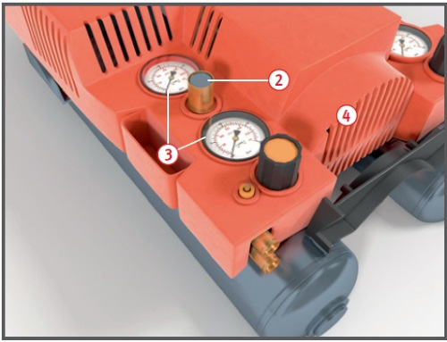
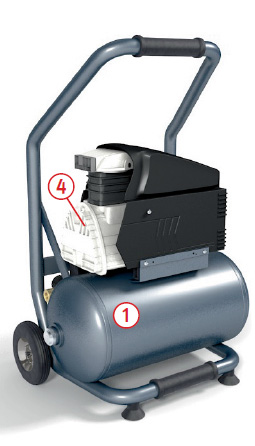

Gefährdungen
- Lärmbelastung im Indoorbetrieb.
- Zerbersten des Druckbehälters aufgrund innerer Korrosion oder Manipulation des Überdruckventils.
- Quetschgefahr durch Demontage der Sicherheitsabdeckungen.
- Berühren von heißen Bauteilen.
- Vergiftungsgefahr bei Verwendung von kraftstoffbetriebenen Kompressoren in Räumen.
Allgemeines
- Nur CE gekennzeichnete, mit einem Fabrikschild
 versehene Geräte verwenden und standsicher aufstellen. Das Fabrikschild enthält alle notwendigen Angaben, die für die Benutzung wichtig sind, z. B. den zulässigen Betriebsüberdruck und den Rauminhalt des Druckbehälters.
versehene Geräte verwenden und standsicher aufstellen. Das Fabrikschild enthält alle notwendigen Angaben, die für die Benutzung wichtig sind, z. B. den zulässigen Betriebsüberdruck und den Rauminhalt des Druckbehälters.

Schutzmaßnahmen
- Schallreduzierte Kompressoren verwenden.
- Auf funktionsfähige Sicherheitsventile
 und Druckmessgeräte
und Druckmessgeräte  (Manometer) achten.
(Manometer) achten.
- Sicherheitsventile sind gegen Überschreiten des Betriebsdruckes fest eingestellt und verplombt.
- Sicherheitsventile nicht durch Absperreinrichtungen unwirksam machen.
- Sicherheitsventile und Druckmessgeräte gegen Beschädigungen schützen.
- Ablassventile – z. B. für das Entfernen von Kondenswasser – regelmäßig betätigen und auf Wirksamkeit überprüfen.
- Verkleidung beweglicher Antriebsteile (Keilriemen, Zahnräder usw.) nicht entfernen
 .
.
- Verdichter so aufstellen, dass die Ansaugung von leicht entzündlichen und entzündlichen Gasen und Dämpfen ausgeschlossen ist.
- Kompressoren nur von unterwiesenen Personen bedienen lassen.
- Instandsetzungs- und Änderungsarbeiten an Kompressoren nur von zugelassenen Fachbetrieben ausführen lassen.
Zusätzliche Hinweise
Elektrisch betriebene
Kompressoren
- Nur über einen besonderen Speisepunkt anschließen, z. B. Baustromverteiler oder PRCDS mit Fehlerstromschutzschalter (RCD).
Kraftstoffbetriebene Kompressoren
- Ausschließlich mit Katalysator bzw. Rußpartikelfilter betreiben.
- Nur im Freien verwenden.
| Prüfgruppe |
Druckinhaltsprodukt (bar x l) mit Druck PS > 0,5 bar |
Wiederkehrende Prüfungen |
Innere Prüfungen |
Festigkeits-
prüfungen |
| GIP |
0 < PS x V ≤ 50 |
Zur Prüfung befähigte Person |
Legt der Betreiber in der Gefährdungsbeurteilung fest |
| I, II |
50 < PS x V ≤ 200 |
Zur Prüfung befähigte Person |
Legt der Betreiber in der Gefährdungsbeurteilung fest |
Prüfungen
- Nur Kompressoren verwenden,
die vor der ersten Inbetrieb -
nahme geprüft wurden (beauftragt
vom Hersteller/Lieferanten
oder Arbeitgeber). Wer diese
Prüfung machen muß (zur Prüfung
befähigte Person oder zugelassene
Überwachungsstelle)
richtet sich nach der Größe des
Behälters (Volumen V) und dem
zulässigen Betriebsüberdruck PS.
- Für Kompressoren bis einschließ
lich 1000 barLiter sind
die Prüffristen für wieder -
kehrende Prüfungen im Rahmen
der Gefährdungsbeurteilung
nach Betriebssicherheitsver -
ordnung unter Berücksichtigung
der Herstellervorgaben zu
ermitteln.
Arbeitsmedizinische Vorsorge
- Arbeitsmedizinische Vorsorge nach Ergebnis der Gefährdungsbeurteilung veranlassen (Pflichtvorsorge) oder anbieten (Angebotsvorsorge). Hierzu Beratung durch den Betriebsarzt.
09/2021